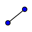

GeoGebra offers a Navigation Bar that allows you to navigate through the construction steps of a prepared GeoGebra file. Select item Navigation Bar for Construction Steps in the View menu in order to display the Navigation Bar at the bottom of the Graphics View.
The Navigation Bar provides a set of navigation buttons and displays the number of construction steps (e. g., 2 / 7 means that currently the second step of a total of 7 construction steps is displayed):
·
 button: go back to step 1
button: go back to step 1
·  button: go back step by step
·
 button: go forward step by step
button: go forward step by step
·
 button: go to the last step
button: go to the last step
·
 Play:
automatically play the construction step by step
Play:
automatically play the construction step by step
Note: You may change the speed of this
automatic play feature using the text box to the right of the  Play
button.
Play
button.
·
 Pause:
pause the automatic play feature
Pause:
pause the automatic play feature
Note: This button only appears after you
click on the Play button.
·
 button: This button opens the Construction
Protocol.
button: This button opens the Construction
Protocol.